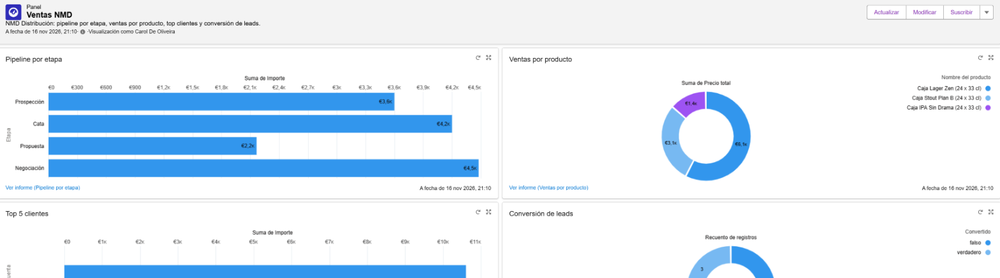
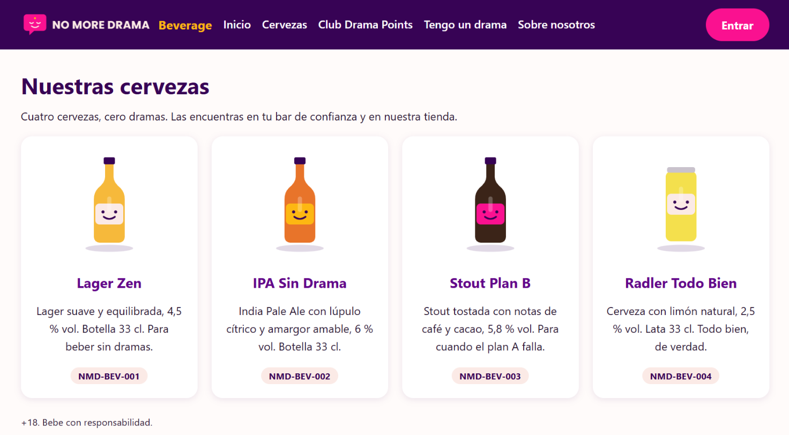

Salesforce Functional Lead · Business Analyst & Product Owner
Traduzco necesidades de negocio en soluciones Salesforce que la gente usa. Y ahora también construyo con IA: diseño la solución como BA/PO y la levanto con Claude Code, desde los requisitos hasta la org, probada y documentada.
I turn business needs into Salesforce solutions people actually use. And now I also build with AI: I design the solution as a BA/PO and deliver it with Claude Code, from requirements to a working org, tested and documented.
9años con Salesforce (desde octubre de 2017)years with Salesforce (since October 2017)
8certificacionescertifications
5demos en una org realdemos in a real org
7sectoresindustries
ExperienciaExperience
Feb 2023 – actualidadFeb 2023 – Present
Indra
Salesforce Project Manager | Business Analyst
Lidero la toma de requisitos y la definición de la solución, y hago de enlace entre el equipo técnico y los clientes.I lead requirements gathering and solution definition, acting as the link between the technical team and customers.
Coordino funcionalmente un equipo Salesforce multidisciplinar, interno y de proveedor externo: asigno prioridades, reviso entregables y valido que todo esté listo para la release.I lead functional coordination of a multidisciplinary Salesforce team, both internal and vendor: I assign priorities, review deliverables and validate readiness for release.
Hago el seguimiento y soporte de los proyectos, y mejoro y optimizo los procesos según lo que necesita el cliente.I follow up and support projects, improving and optimising processes to match customer needs.
Traduzco las necesidades de negocio en análisis útiles para que el equipo tome buenas decisiones.I turn business needs into insightful analysis so the team can make the right decisions.
Soy responsable de la documentación funcional y técnica de principio a fin.I own functional and technical documentation end to end.
Nov 2019 – feb 2023Nov 2019 – Feb 2023
Capgemini
Salesforce Consultant | Salesforce PM
Planifiqué y dirigí proyectos, con una comunicación clara y continua con los clientes en todas las fases.I planned and steered projects, keeping communication with customers clear and continuous through every phase.
Velé por la calidad de la planificación y por entregar a tiempo y con calidad.I ensured the quality of project planning and on-time, on-quality delivery.
Lideré el diseño de procesos y la definición de requisitos para equipos técnicos en entornos ágiles, explicando con claridad conceptos complejos de negocio y de tecnología.I led process design and requirements definition for technical teams in agile contexts, communicating complex business and technical concepts effectively.
Mejoré y optimicé procesos según evolucionaban las necesidades de los clientes, y las traduje en análisis para la toma de decisiones del equipo.I improved and optimised processes as customer needs evolved, translating those needs into analysis for team decision-making.
May 2019 – nov 2019May 2019 – Nov 2019
Kaizenstep
Salesforce Consultant | Salesforce Business Analyst
Diseñé y entregué proyectos en distintos sectores, entre ellos retail y entidades financieras.I designed and delivered projects across industries, including retail and financial entities.
Lideré la toma de requisitos y el soporte a la solución, creé herramientas Salesforce a la medida de cada cliente, modelé datos y configuré e implementé Sales, Field Service, Service y Community Cloud.I led requirements gathering and solution support, created Salesforce tools that matched customer needs, modelled data, and configured and implemented Sales, Field Service, Service and Community Cloud.
Presenté demos y redacté documentación funcional y técnica, material de formación y guías de usuario.I delivered demo presentations and wrote functional and technical documentation, training material and user guides.
May 2018 – may 2019May 2018 – May 2019
Birchman Group
Salesforce Consultant
Gestioné la configuración de la org: reglas de validación, automatizaciones, workflows, Process Builder y Flow Builder, objetos y campos personalizados, perfiles, roles y permisos.I managed org configuration: validation rules, automations, workflows, Process Builder and Flow Builder, custom objects and fields, profiles, roles and permissions.
Facilité la creación de escenarios y scripts de prueba, y configuré y diseñé plataformas en Sales, Service, Field Service y Community Cloud.I facilitated the creation of test scenarios and scripts, and configured and designed platforms across Sales, Service, Field Service and Community Cloud.
Participé en la formación y la implantación de nuevas soluciones CRM con Apex y Visualforce, creé material de onboarding y formé a las nuevas incorporaciones.I took part in training and in implementing new CRM solutions using Apex and Visualforce, created onboarding material and led training for new team members.
Oct 2017 – may 2018Oct 2017 – May 2018
Lidera Knowledge
Salesforce Consultant
Realicé análisis funcional, y configuré y personalicé la plataforma: administración, seguridad y entornos.I delivered functional analysis, and set up and customised the platform: administration, security and environment configuration.
Personalicé objetos, campos, páginas y tipos de registro, migré a Salesforce Lightning, automaticé procesos, cargué datos con Data Loader y creé informes y paneles.I customised objects, fields, pages and record types, migrated to Salesforce Lightning, automated processes, loaded data with Data Loader, and created reports and dashboards.
Certificaciones e idiomasCertifications and languages
Salesforce Administrator
Marketing Cloud Administrator
Marketing Cloud Email Specialist
Agentforce Specialist
Data Cloud Consultant
Public Sector Solutions
PSM I (Professional Scrum Master)
DevOps Foundation
Inglés · profesionalEnglish · professional
Español · nativoSpanish · native
Portugués · nativoPortuguese · native
Portfolio
Cinco casos de negocio construidos de principio a fin en una Developer Edition: requisitos, diseño, configuración, código, pruebas en el navegador con cada usuario y documentación. El código y un README por demo están en GitHub.
Five business cases built end to end in a Developer Edition: requirements, design, configuration, code, browser testing with each user, and documentation. Code and a README per demo are on GitHub.
NMD Beverage, NMD Clinic y NMD Care son empresas ficticias creadas para estas demos; todos los datos son inventados.
NMD Beverage, NMD Clinic and NMD Care are fictional companies created for these demos; all data is made up.
Demo 1
NMD Care: atención al cliente con AgentforceNMD Care: customer service with Agentforce
Problema de negocioBusiness problem
El equipo dedica el día a responder «¿dónde está mi pedido?» y a tramitar devoluciones sencillas, y los casos que de verdad necesitan a una persona esperan.
The team spends the day answering "where is my order?" and processing simple returns, while the cases that really need a person wait.
SoluciónSolution
Zen, un agente de Agentforce con subagentes para estado de pedido, devoluciones, incidencias y paso a una persona. Consulta datos reales del pedido, crea casos y escala a la consola NMD Care cuando toca.
Zen, an Agentforce agent with subagents for order status, returns, incidents and handoff to a person. It reads real order data, creates cases and escalates to the NMD Care console when needed.
Triaje NMD: la IA detecta, las reglas deciden, las personas actúanNMD Triage: AI detects, rules decide, people act
Problema de negocioBusiness problem
Todos los casos esperan en la misma cola: el cliente a punto de irse se pierde entre las consultas rutinarias.
Every case waits in the same queue: the customer about to leave gets lost among routine questions.
SoluciónSolution
Una plantilla de Prompt Builder lee el caso y propone nivel de drama (1-5), categoría, resumen y guía para el agente. Unas reglas en Flow, que el negocio puede revisar, deciden el camino, el canal y la tarea; los urgentes van a su cola.
A Prompt Builder template reads the case and suggests a drama level (1-5), category, summary and agent guidance. Flow rules the business can review decide the path, channel and task; urgent cases go to their own queue.
NMD Distribución: ventas B2B de lead a pedidoNMD Distribution: B2B sales from lead to order
Problema de negocioBusiness problem
Los comerciales no saben qué leads atender primero, los descuentos se dan sin control y el pedido se crea a mano después de ganar.
Sales reps don't know which leads to work first, discounts are given without control and the order is created by hand after winning.
SoluciónSolution
Puntuación automática de leads, proceso de venta propio (prospección, cata, propuesta, negociación), presupuestos con descuento por volumen, aprobación de descuentos altos y creación automática del pedido al ganar.
Automatic lead scoring, a custom sales process (prospecting, tasting, proposal, negotiation), quotes with volume discounts, approval for high discounts and automatic order creation on win.
TecnologíaTechnology
Sales Cloud · Flow · presupuestosQuotes · Approval Process · informes y panelesreports & dashboards
Qué demuestraWhat it shows
Modelar un proceso comercial completo con estándar de Salesforce y conectarlo con la atención al cliente (Zen consulta esos pedidos).
Modelling a full sales process with standard Salesforce and connecting it to customer service (Zen reads those orders).

Panel de ventas para la jefa de ventas.Sales dashboard for the sales manager.
NMD Clinic: visita médica y complianceNMD Clinic: medical visits and compliance
Problema de negocioBusiness problem
Una delegada visita a profesionales sanitarios en un sector regulado: sin consentimiento no puede registrar visitas ni entregar muestras, y hay un límite anual de muestras por profesional.
A medical rep visits healthcare professionals in a regulated industry: without consent she can't log visits or hand out samples, and there is a yearly sample limit per professional.
SoluciónSolution
Modelo HCP/HCO sobre la plataforma estándar, registro de visitas (call report), muestras con límite configurable, consentimiento RGPD obligatorio y call plan por segmento con su cobertura.
HCP/HCO model on the standard platform, visit logging (call report), samples with a configurable limit, mandatory GDPR consent and a call plan by segment with coverage tracking.
NMD Beverage: portal público con el chat de ZenNMD Beverage: public portal with the Zen chat
Problema de negocioBusiness problem
El consumidor final no tiene dónde ver las cervezas, unirse a un programa de fidelidad, consultar sus pedidos o pedir ayuda fuera del horario del equipo.
End consumers have nowhere to browse the beers, join a loyalty programme, check their orders or get help outside team hours.
SoluciónSolution
Portal Experience Cloud con catálogo público, club Drama Points con niveles (Tranqui, Zen, Drama Free), formulario «Tengo un drama» que entra triado, zona de cliente privada y el chat de Zen 24/7 con paso a una persona.
Experience Cloud portal with a public catalogue, the Drama Points club with tiers (Tranqui, Zen, Drama Free), a "Tengo un drama" form that arrives triaged, a private customer area and the 24/7 Zen chat with handoff to a person.
TecnologíaTechnology
Experience Cloud (LWR) · LWC · Apex · Messaging for In-App and Web · Omni-Channel · Sharing Sets
Qué demuestraWhat it shows
Abrir Salesforce al cliente final con seguridad: lo público, lo privado y el aislamiento entre clientes, probado con cada tipo de usuario.
Opening Salesforce to end customers securely: public vs private, and isolation between customers, tested with each type of user.
Portada pública del portal.Public portal home.

Catálogo público para visitantes sin cuenta.Public catalogue for guests.
Uso la IA en dos niveles. Para construir: Claude Code es mi motor técnico. Yo defino el problema, las reglas y las pruebas; la IA genera metadatos, Apex, Flows y documentación; y nada se da por bueno sin revisarlo y probarlo en la org. Así he construido cinco demos completas y un producto propio en pocas semanas. Dentro de Salesforce: agentes con Agentforce y plantillas de Prompt Builder con modelos Claude que resumen, clasifican y preparan el trabajo, siempre con una persona que decide.
I use AI at two levels. To build: Claude Code is my technical engine. I define the problem, the rules and the tests; the AI generates metadata, Apex, Flows and documentation; and nothing ships until I've reviewed it and tested it in the org. That's how I built five end-to-end demos and my own product in a few weeks. Inside Salesforce: Agentforce agents and Prompt Builder templates with Claude models that summarise, classify and prepare the work, always with a person making the call.
Cómo trabajoHow I work
BA / PO
Problema de negocio, usuarios, historias y criterios de aceptación. Plan aprobado antes de construir.
Business problem, users, stories and acceptance criteria. Plan approved before building.
Claude Code
Asistente de IA para generar metadatos, Apex, LWC y documentación, siempre revisado y con reglas claras.
AI assistant to generate metadata, Apex, LWC and documentation, always reviewed and with clear rules.
Salesforce DX
Todo como código fuente: despliegues repetibles con la CLI y pruebas Apex automáticas.
Everything as source: repeatable CLI deployments and automated Apex tests.
Git
Un commit por fase, historial legible y repositorio limpio de datos sensibles.
One commit per phase, a readable history and a repository free of sensitive data.
Pruebas en el navegadorBrowser testing
Cada flujo se prueba en la org con cada tipo de usuario, no solo con el administrador.
Each flow is tested in the org with each type of user, not just the admin.
UAT
Escenarios de aceptación con datos de demo pequeños y ficticios, que se borran al terminar.
Acceptance scenarios with small, fictional demo data that is deleted afterwards.
Proyecto propioMy own project
No More Drama (NMD) es mi marca de producto. Bajo ella desarrollo Org Detox Scan.
No More Drama (NMD) is my product brand. Under it I am developing Org Detox Scan.
FormaciónEducation
Salesforce Data Cloud
Salesforce · nov 2024Salesforce · Nov 2024
Agile Management & Scrum Projects
IT Institute · may 2023IT Institute · May 2023
DevOps – Las Artes Marciales del Software
Udemy · feb 2023Udemy · Feb 2023
Scrum Foundation Professional
Certiprof · 2020
Cloud Computing: Salesforce
RED.es · 2017–2018
Grado en Administración y Dirección de Empresas y Gestión PúblicaBachelor's Degree in Business Management & Public Administration
Universidad de Vigo · 2012–2016
SectoresIndustries
Energía y utilitiesEnergy & Utilities
Retail
SegurosInsurance
Sector públicoPublic Sector
InmobiliarioReal Estate
FarmaPharma
EducaciónEducation
HablemosLet's talk
¿Un proyecto Salesforce que necesita orden, requisitos claros o alguien que coordine el equipo? Escríbeme por LinkedIn.
A Salesforce project that needs order, clear requirements or someone to coordinate the team? Message me on LinkedIn.